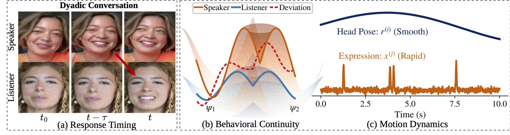
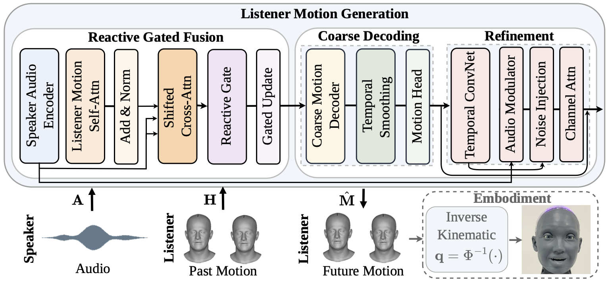
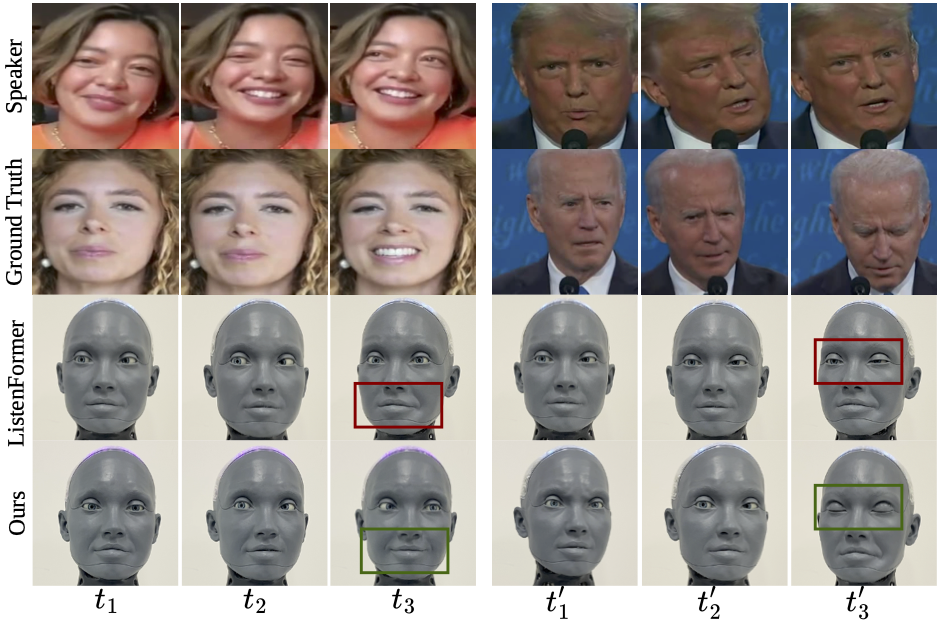

Generating responsive listener facial motion is an important task for embodied conversational AI. Two modeling challenges are central: accounting for the timing of speaker cues while maintaining continuity with the listener's ongoing motion, and capturing locally variable facial events alongside the overall motion trajectory. Listener responses may follow preceding cues with a temporal lag, while brief expressions and blinks introduce variation that is difficult to predict deterministically. These challenges motivate a framework that combines history-aware temporal alignment with stochastic expression refinement. we propose REALM (Reactive Embodied Audio-driven Listening Model), a coarse-to-fine framework for audio-driven reactive listening. A Reactive Gated Speaker--Listener Fusion module combines listener motion history with speaker audio through a delay-centered attention prior and adaptive gating. A coarse decoder predicts a base motion trajectory, which is augmented by audio-conditioned stochastic residuals in the expression subspace while retaining the coarse pose parameters. Evaluations on ViCo and L2L show improvements over the evaluated baselines across multiple motion-quality metrics. Additional analyses examine delay sensitivity, gate behavior, and blink dynamics. Finally, deployment on an Ameca humanoid robot and a perceptual user study demonstrate the applicability of the generated behavior to physical embodiment.


